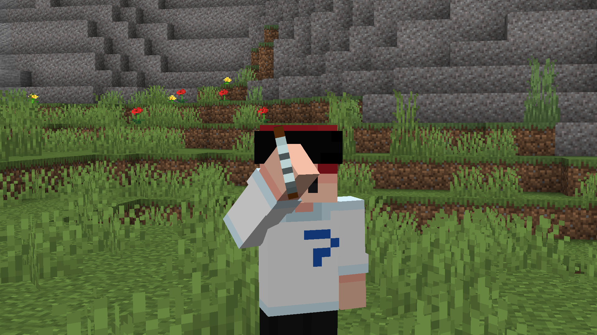
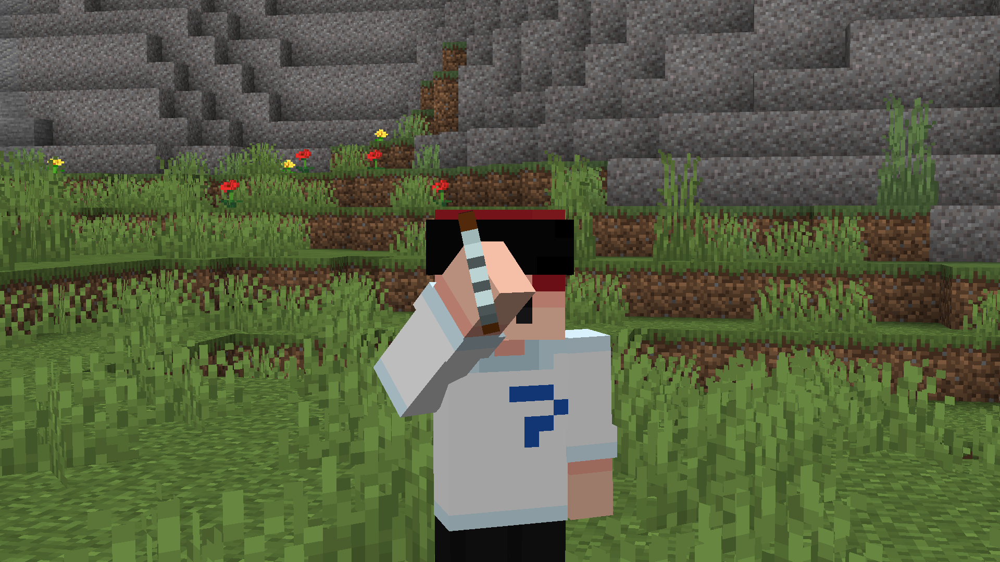
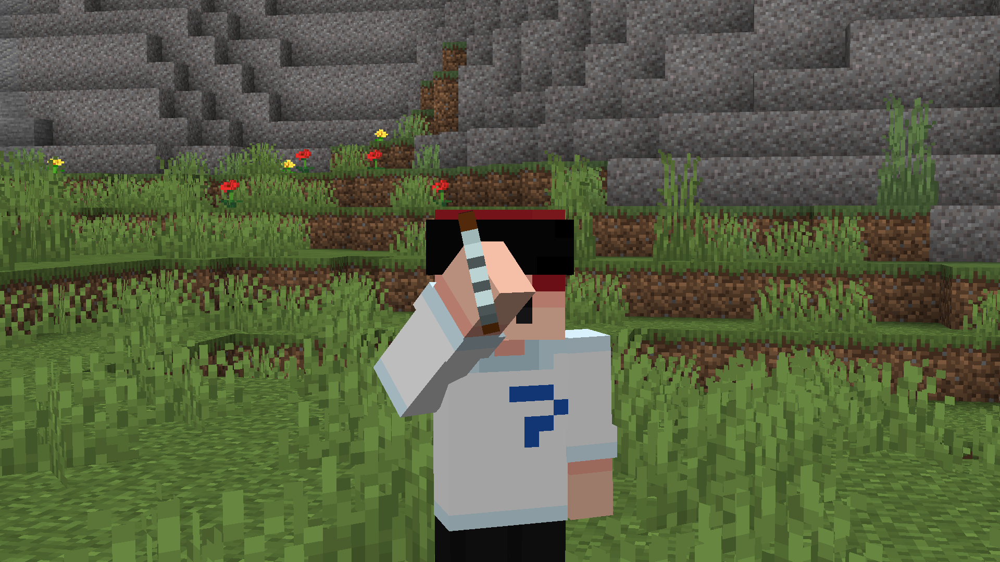

Spyglass HUD Remover
A simple pack designed for version 20w45a+ of 1.17 that removes the circular border you see when scoping with the Spyglass. This makes it very similar to the OptiFine zoom.

Resource packs are the simplest thing to install on Minecraft. Here are the simple steps.
WIN + R then type %appdata%.minecraft then resourcepacks and drag the .zip file inside.Options... then Resource Packs... and find the pack in there.> button and press Done